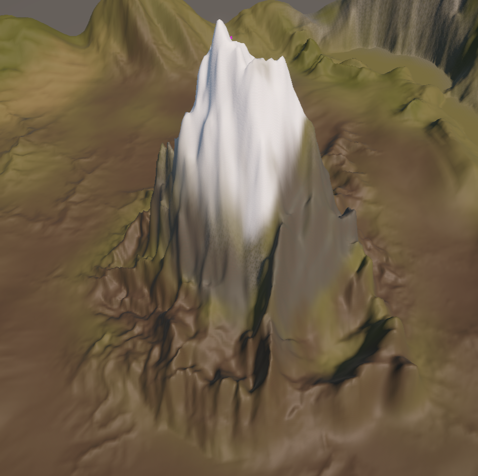
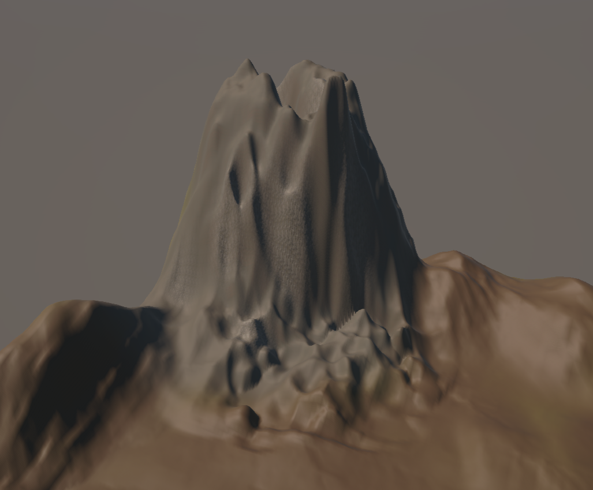
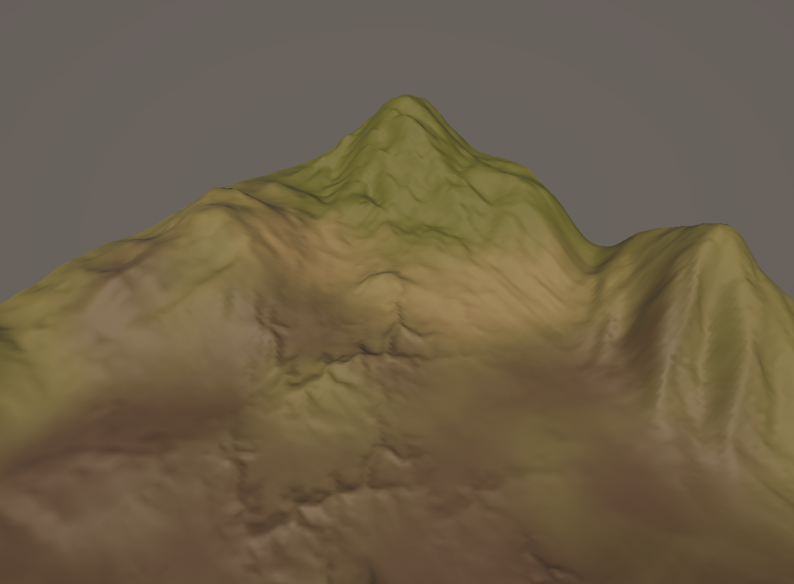
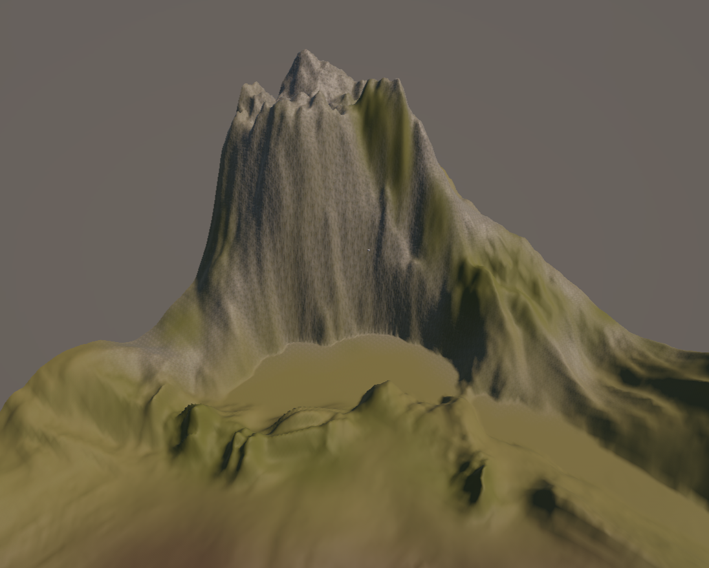
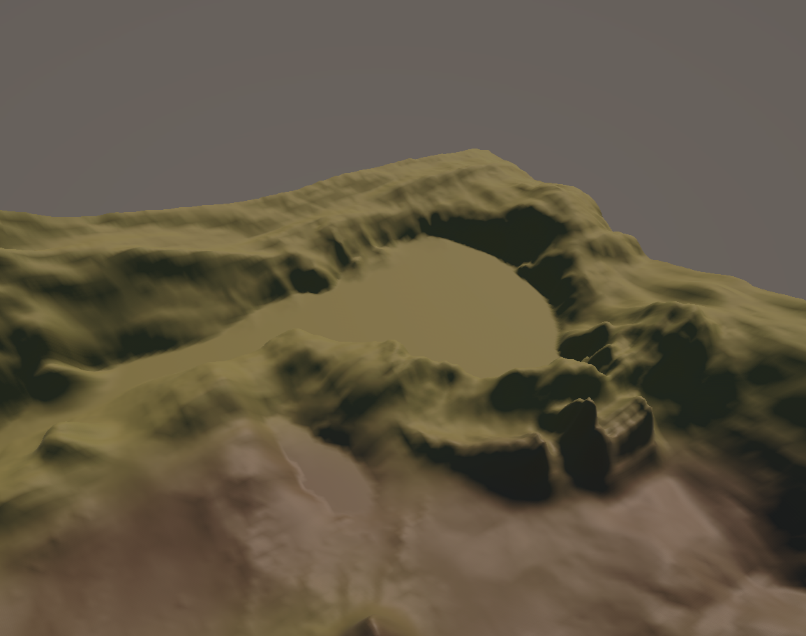

Space Tour
I have created an assisted reproduction device, which exists fifty years into the future. In that era, people live in a democratic society, and with the emergence of this device, they are more willing to have children.
The core function of this device is to accelerate the reproduction process, reducing the typical ten-month gestation period to five months, significantly alleviating the burden on pregnant individuals.
Its mechanism relies on a continuous supply of heat and nutritional supplements, while also monitoring the fetus's health in real-time. Additionally, some corporations have marketed it as a fashionable accessory, incorporating various design elements into its appearance, further boosting its popularity and sales.
Documentation
1. The snow-capped mountain in the middle
2. The first version of the volcano (without lava)
3. Meadow
4. Waterfall and lake
 To be continued...the remaining parts will be updated before March 9.